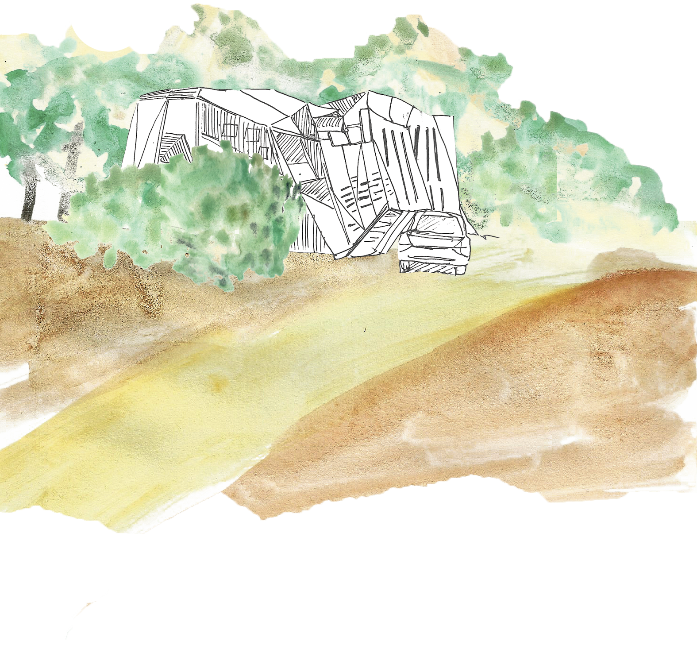
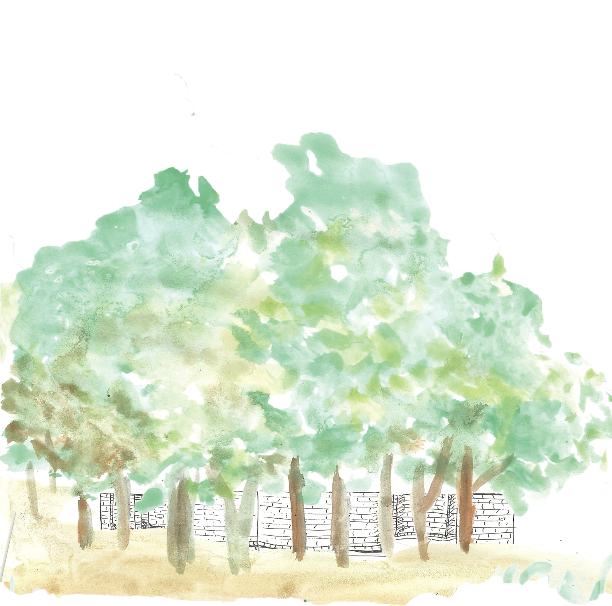

La obra en Ciudad Abierta se construye a modo de travesía, es decir, el valor está en el “entre”, en lo que se encuentra al ir transitando de un punto a otro. Esto permite que lo construido se vea permanentemente en un contexto, guardando una relación estrecha con su entorno, lo natural.
Al transitar por la zona alta de Ciudad Abierta se realiza un recorrido que en un primer momento es de carácter natural. La obra no es aparente, ni aparece de manera gratuita. Para encontrarse con ella uno debe adentrarse en esa naturaleza que se torna densa para recibir lo construido.
Lo natural se presenta de dos maneras distintas para dar un ritmo al aparecer. En una primera instancia atravesamos senderos abiertos y espaciosos que permiten el tránsito libre de los terrenos. Esta abertura está limitada por áreas donde la naturaleza se vuelve frondosa. Los árboles y la vegetación en general actúan como un velo, ocultando pero al mismo tiempo dando un atisbo de que se puede adentrar en ellos y encontrar algo distinto.
El contraste entre lo abierto y lo denso de lo natural constituyen el aparecer de lo construido. Este ritmo permite que la obra no rompa con su entorno natural. Lo construido no se impone, si no que el terreno lo acoge para permitir un transitar fluido.